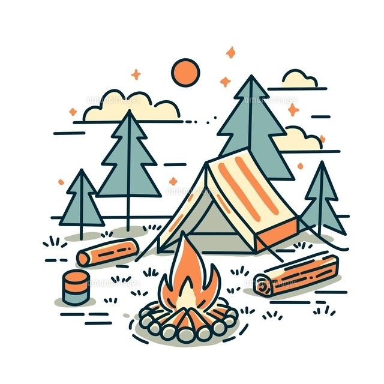
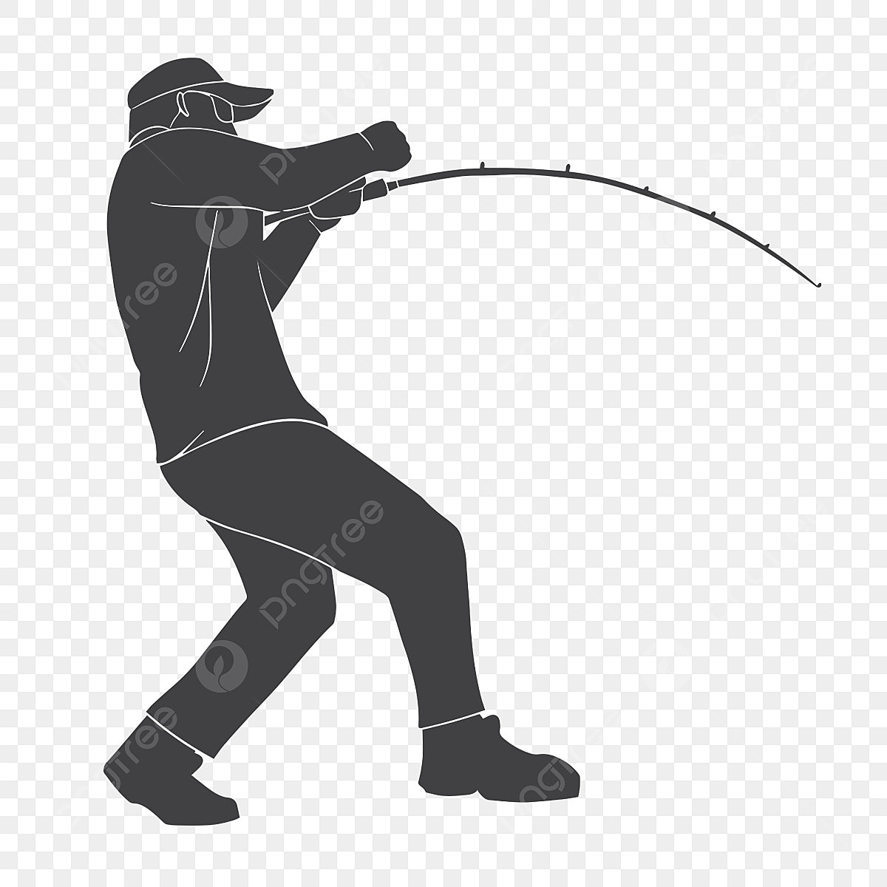
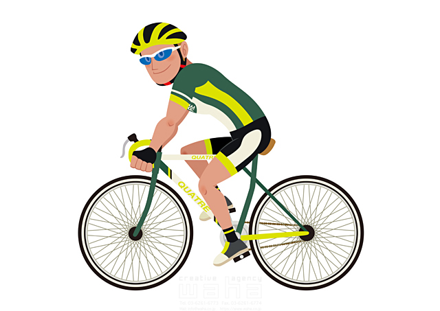
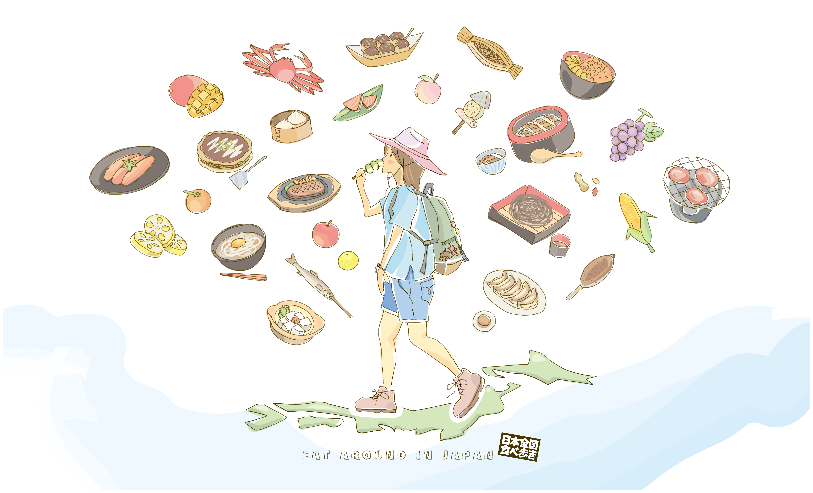
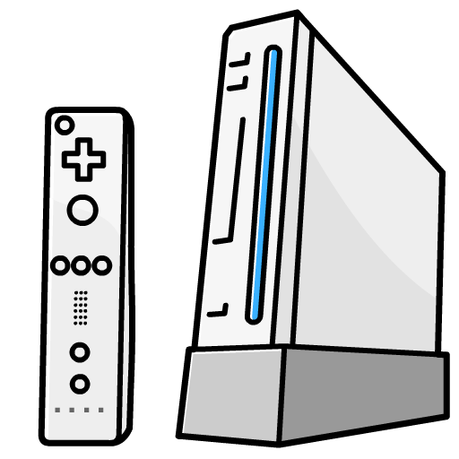
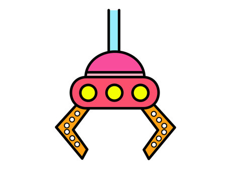

自己紹介
- 出身地：宮崎県都城市
- 家族：妻１人、娘１人の３人
- 現住居：福岡県福岡市
- 仕事：インフラ関係
- 趣味：アウトドア全般とその他
趣味






| アウトドア | 登山 キャンプ 釣り サイクリング ツーリング グルメ旅 |
|---|---|
| その他 | PC PPF ゲーム（wii） UFOキャッチャー |







| アウトドア | 登山 キャンプ 釣り サイクリング ツーリング グルメ旅 |
|---|---|
| その他 | PC PPF ゲーム（wii） UFOキャッチャー |